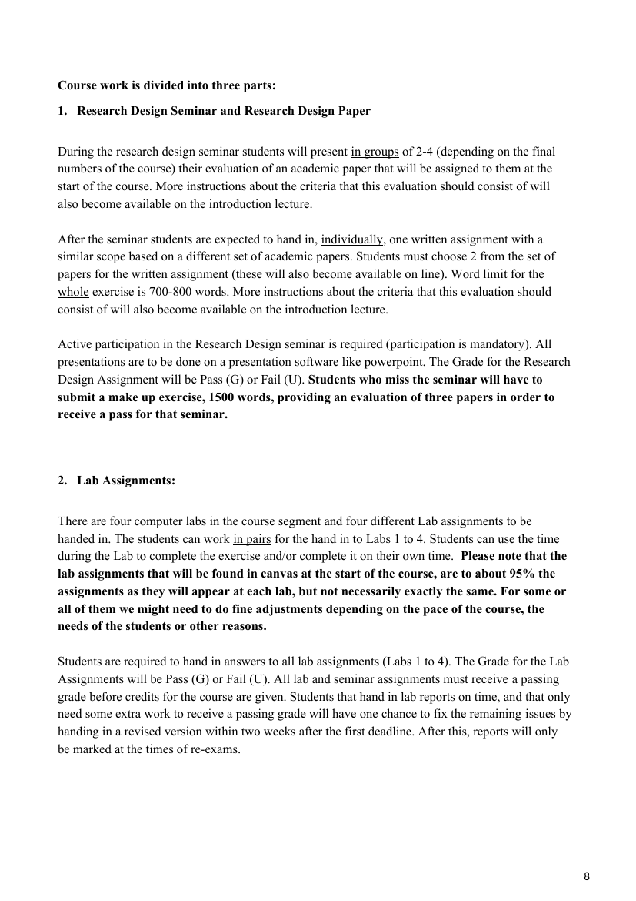
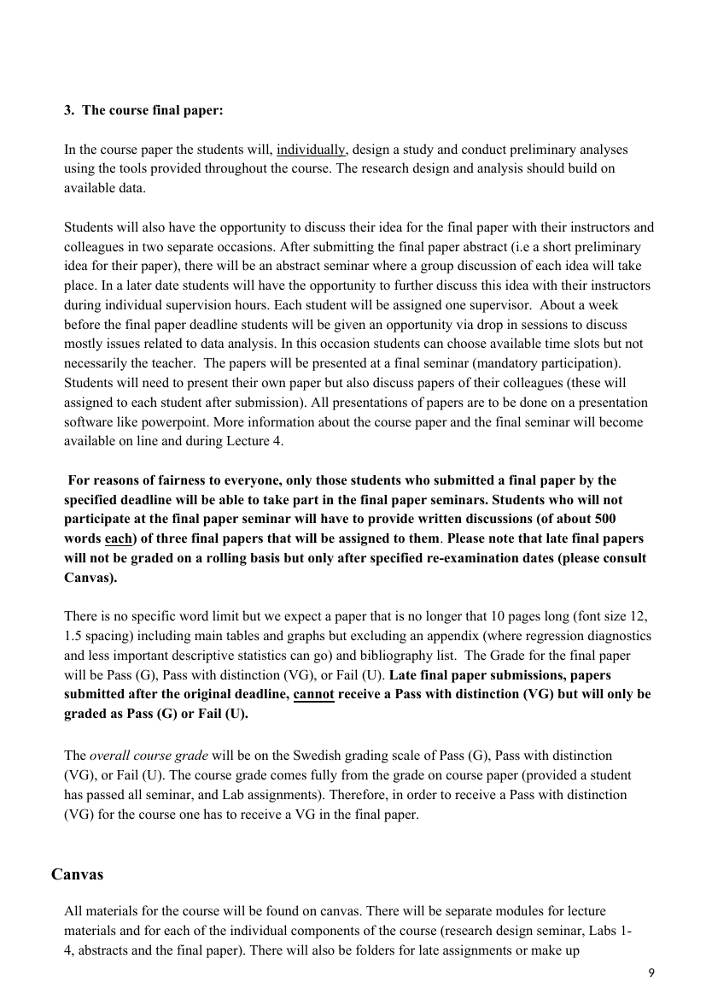
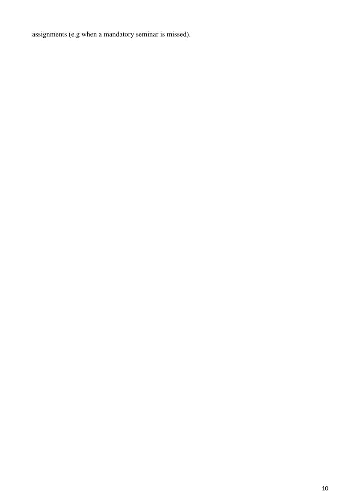

Belägg för examinationsmatrisens markeringar · Källa: kursguide H25
Tabellen nedan styrker examinationsmatrisens markeringar för SF2324 mot kursguide H25. Kursen examineras genom Research Design Paper, fyra Lab-inlämningar, samt ett Final paper (forskningsdesign + empirisk analys) som presenteras vid ett seminarium.
| Examinationsform (per matris) | Citat ur kursguide H25 | Källa |
|---|---|---|
| Uppsats / research paper | In the course paper the students will, individually, design a study and conduct preliminary analyses using the tools provided throughout the course. The research design and analysis should build on available data. There is no specific word limit but we expect a paper that is no longer that 10 pages long (font size 12, 1.5 spacing) including main tables and graphs but excluding an appendix … and bibliography list. The Grade for the final paper will be Pass (G), Pass with distinction (VG), or Fail (U). |
Sid 9 — Se sida → |
| Seminarieinlämning / memo | After the seminar students are expected to hand in, individually, one written assignment with a similar scope based on a different set of academic papers. Students must choose 2 from the set of papers for the written assignment … Word limit for the whole exercise is 700-800 words. Students are required to hand in answers to all lab assignments (Labs 1 to 4). The Grade for the Lab Assignments will be Pass (G) or Fail (U). 04/12 — Submission, final paper abstract 17.00 … there will be an abstract seminar where a group discussion of each idea will take place. |
Sid 8–9 — Se sida → |
| Muntlig presentation | All presentations are to be done on a presentation software like powerpoint. Students will need to present their own paper but also discuss papers of their colleagues (these will assigned to each student after submission). All presentations of papers are to be done on a presentation software like powerpoint. |
Sid 8–9 — Se sida → |
| Seminariedeltagande | Active participation in the Research Design seminar is required (participation is mandatory). … Students who miss the seminar will have to submit a make up exercise, 1500 words, providing an evaluation of three papers in order to receive a pass for that seminar. The papers will be presented at a final seminar (mandatory participation). |
Sid 8–9 — Se sida → |
| Opposition / peer review | Students will need to present their own paper but also discuss papers of their colleagues (these will assigned to each student after submission). Students who will not participate at the final paper seminar will have to provide written discussions (of about 500 words each) of three final papers that will be assigned to them. |
Sid 9 — Se sida → |

Sida 8 — Course work parts 1–2: Research Design + Lab Assignments
Sida 9 — Course final paper + presentations + discussants
Sida 10 — Make-up + Grading